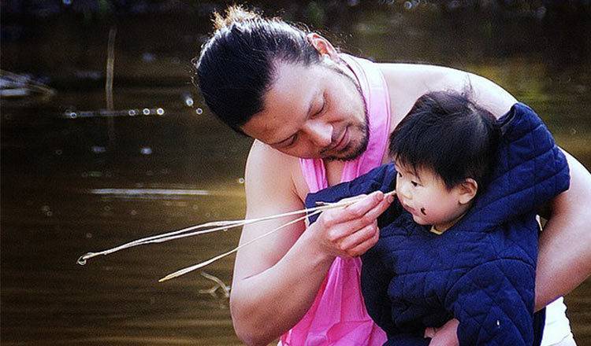

春节、元宵节、端午节、中秋节，好像平日里大家有印象的节日都是关于吃吃吃的，“每逢佳节胖三斤” 也逐渐升级成为“每逢佳节胖七斤”了，原本一颗打算“假期要减肥！假期要健身！”的美好初心也瞬间被美食所俘虏，面对美食的诱惑，能有几个不被这份诱惑所“污染”？当然，被节日“污染”的可不仅仅只有平日里吵吵嚷嚷的减肥心，能“污”到你身体上的节日，除了几日前的抹黑节，还有比这还“污”的日本泥浆节。
在日本千叶县四街道市郊外的稻田里，当地的男子赤身跳进稻田里，顶着凛冽的寒风，抓起泥浆涂抹在身上，有的还带上自己的小孩，将孩子的身上也涂上泥浆。在这场极具大和民族风格的庆典中，平日备受嫌弃的泥巴变身为节日的主角，成为人们竞相追捧的宠儿。男子们穿着充满民族气息的兜裆布，甩掉各种条条框框的束缚，尽情释放压力。在泥浆节现场，人们可以全身涂满泥浆，在泥浆里的打滚儿，嬉戏打闹。而对于自己重要的人，也要为他涂上泥浆，祈求上天为他带来好运。
“泥浆节”的习俗已经有100多年的历史。按当地的传统习俗，身上涂上泥浆可以避邪，并能给人们带来好运。更重要的是，人们也希望通过这种仪式祈求新的一年能有个好收成。将泥巴涂抹在孩子身上，也是祝福他平安健康地成长。
1、不要害怕泥浆，因为泥浆越多新的一年的好运就越多哦；
2、因为泥浆节是在2月25日，天气还没有变暖，所以大家在玩闹的同时也要准备好保暖措施，不要感冒。